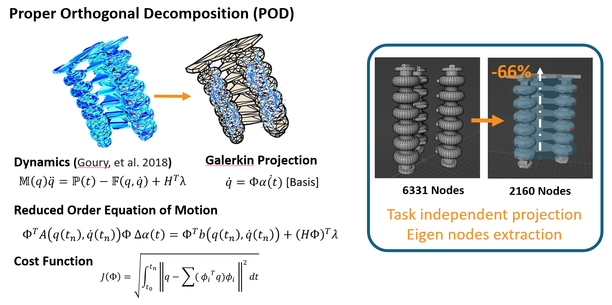
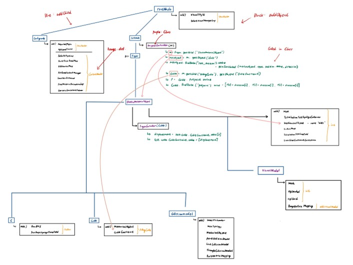

Soft Robotics & Bionics Laboratory
Dept. of Mechanical Engineering
Seoul National University
Dept. of Mechanical Engineering
Seoul National University
Our research goal is to analyze the design and dynamics of biological systems and transform them into robotic/mechatronic systems for human life.
We are interested in bio-inspired design of soft robots and development of novel manufacturing methods for multi-material smart structures.
Publications
Bridging High-Fidelity Simulations and Physics-Based Learning Using a Surrogate Model for Soft Robot Control (Journal)
T. Hong, J. Lee, B. Song and Y.-L. Park.
Advanced Intelligent Systems, 30 Oct. 2025. DOI: 10.1002/aisy.202500696.
Wiley ResearchGateProjects
System Identification of the Soft Robot Project
Project Led by: Tae-Hwa Hong, Ph.D.
Time Commitment: May 2023 - November 2023
Skills: SOFA, MuJoCo, Python, Linux, Git
Time Commitment: May 2023 - November 2023
Skills: SOFA, MuJoCo, Python, Linux, Git

Mesh Optimization
- Optimized simulation meshes by reducing mesh density by 66%, improving computational efficiency and achieving speeds up to 5.5× real-time, surpassing conventional FEM tools such as ABAQUS and COMSOL.
Material Deformation Simulation
- Replicated a pneumatic actuation design in SOFA to simulate an existing origami-design soft manipulator from the real world.
- Implemented a hierarchical tree structure in SOFA to simulate material properties of soft robots, enhancing the fidelity of real-time deformation modeling.

Simulation Setup
- Tested and reorganized early-stage SOFA simulations, improving documentation and workflow for the team, and evaluated SOFA against alternatives such as MuJoCo and Gazebo to ensure suitability for the project.